| 日付 | 2025年3月9日（日） |
|---|---|
| 山域 | 丹沢 |
| メンバー | 単独 |
| 山行形態 | 日帰り |
| アクセス | 電車 |
| ルート (Map) | 上大井駅 (8:01) - (8:35) おおいゆめの里 (8:51) - (9:30) 浅間山 - (9:51) 不動山 - (10:15) 六本松跡 - (11:23) 光明寺 - (11:25) 休憩 (12:00) - (12:19) 国府津駅 |
春になったので曽我丘陵に行ってみることにする。
河津桜が咲く季節だ。
上大井駅に到着。標高30m。
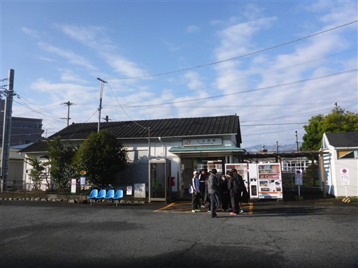
最初は車道を歩いていく。狭い道だが通る車が多い。
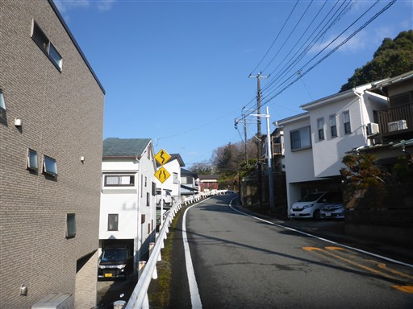
のどかな丘陵地帯が広がる。
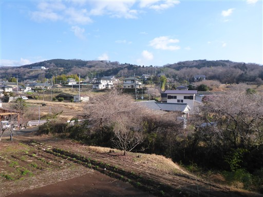
菜の花が咲いている。すっかり季節は春だ。
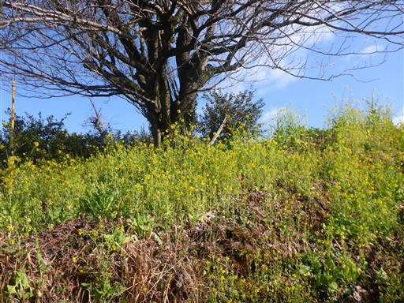
だんだんと道が細くなってくる。
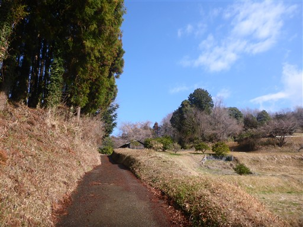
梅の花が咲いている。特に梅園ではないのだが、梅の実のために育てているのだろうか？
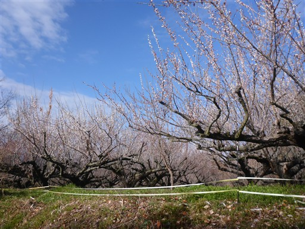
おおいゆめの里に到着。河津桜が満開だ。
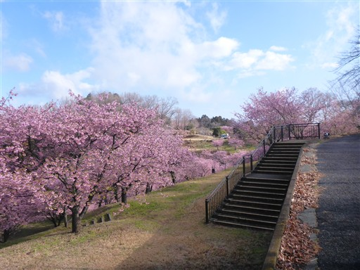
ソメイヨシノよりも少し濃いピンク色だ。
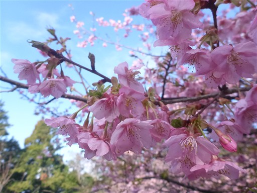
周囲をしばらく散策する。
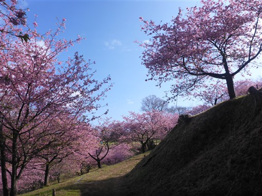
この場所は少し高台になっているので眺めが良い。
遠くに見えているのは箱根の山々だ。
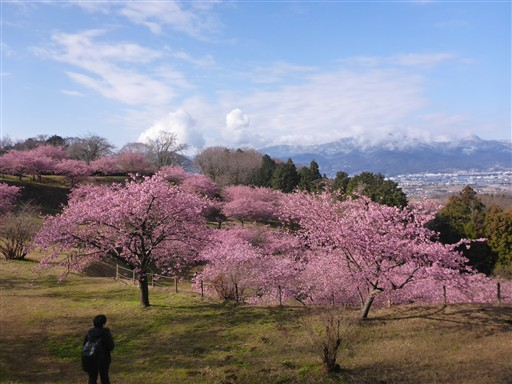
売店も出ている。まだ朝早いので人通りは少ない。
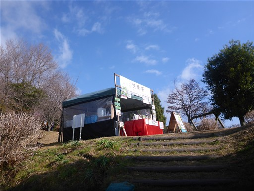
広場にアスレチックが少しある。昨夜の雨で濡れていてよく滑る。
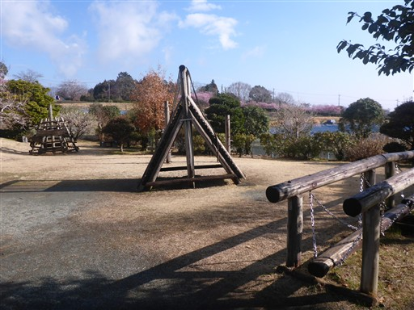
鐘が置かれているので、1回鳴らしてみる。
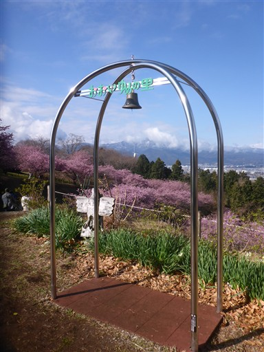
河津桜をのんびり眺めたら、おおいゆめの里を後にする。
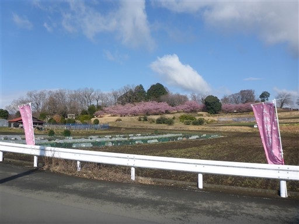
なんと歩こうと思っている道が通行止めになっている。
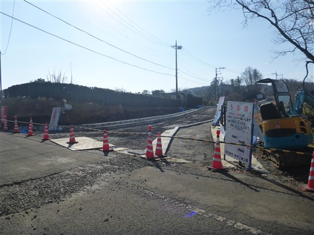
仕方がないので道なき道を進む。
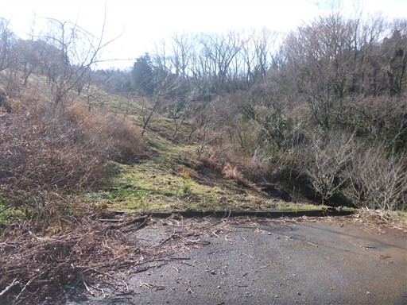
振り返ると丹沢の山々が見える。昨夜降った雪の影響で白く染まっている。
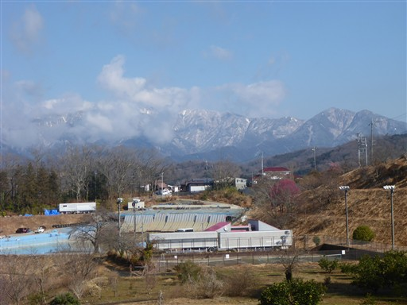
山頂部が白く染まっているため、大山でさえも立派な高山に見える。
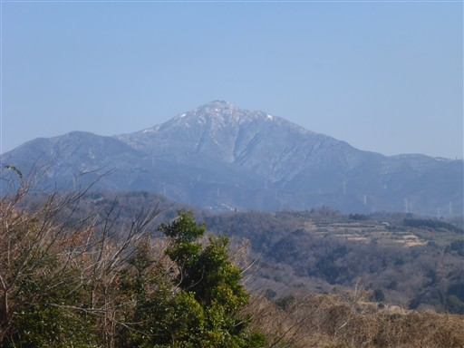
通行止めの反対側に出てくる。
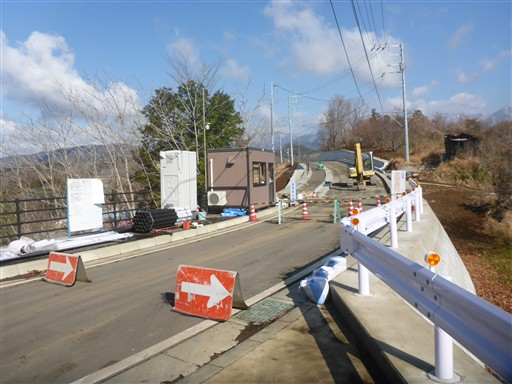
浅間山付近を通過する。ずっと車道歩きが続く。
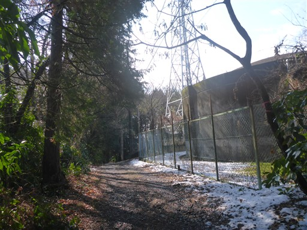
登山道に雪が出てきた。
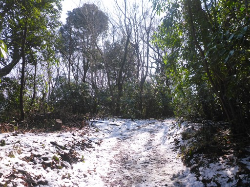
長い車道歩きが終わってようやく登山道っぽい道になる。
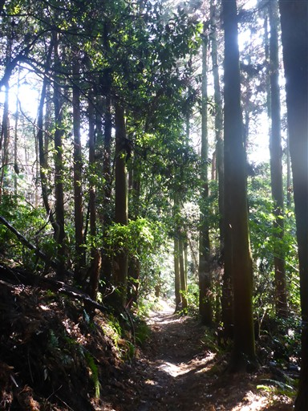
不動山に続く右の細い道に入って行く。

登りが始まるが長くは続かない。
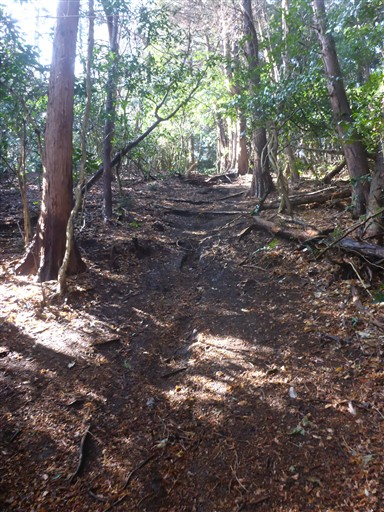
あっという間に不動山に到着。標高328m。
展望は全く広がらない。
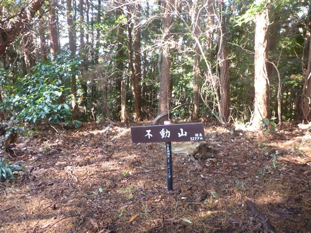
この辺りは照葉樹林と杉が混ざって生えている。

車道に出てくる。ここからはまた車道歩きだ。
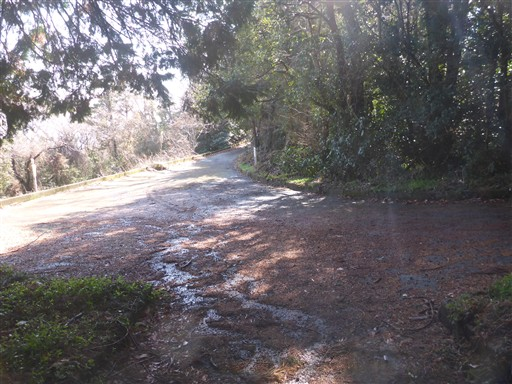
車道歩きと言っても通る車はほとんどなく、のどかな風景が続く。

眼下に梅の木が見える。もう少し梅が咲いていれば素晴らしい風景だっただろう。
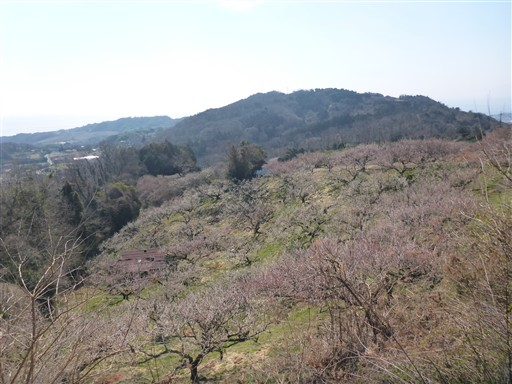
六本松跡に到着。近くに松の木は見当たらない。
側の解説板によると、明治の終わりに最後の一本が枯れてしまったらしい。
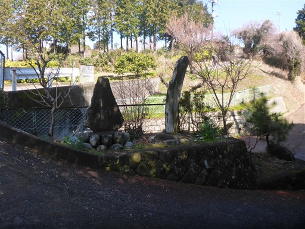
ミカン畑や梅などが広がる風景の中を歩いていく。
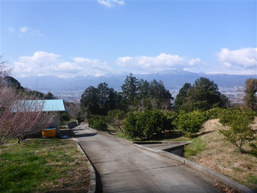
数十人の団体登山者とすれ違う。この山はよく人とすれ違う。人気のコースなのだろう。
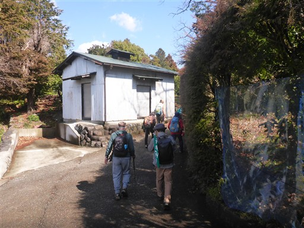
一本松に到着。こちらは小さい松が植えられている。
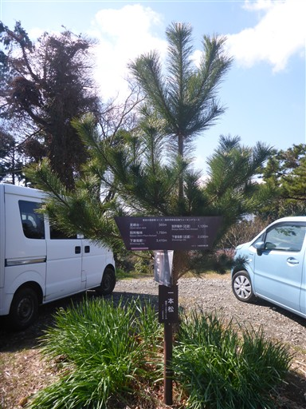
分岐点が多く複雑な道だが、標識はあちらこちらに整備されている。
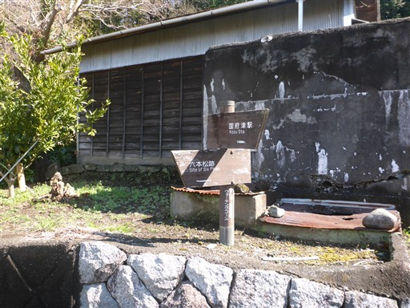
地図には目の前の細い土の道を進んだ先に高山があるように記載されているので行ってみる。
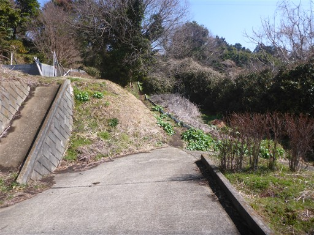
山頂らしき場所に来たが、特に何も見当たらない。私有地っぽい感じがするので、さっさと立ち去る。
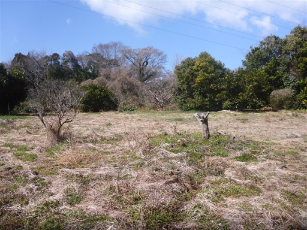
丹沢の山々を再び眺める。本日丹沢に行けば霧氷がきれいだったのだろうか？
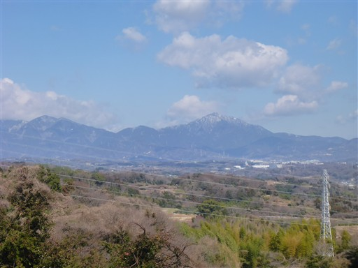
青い海が見えてきた。
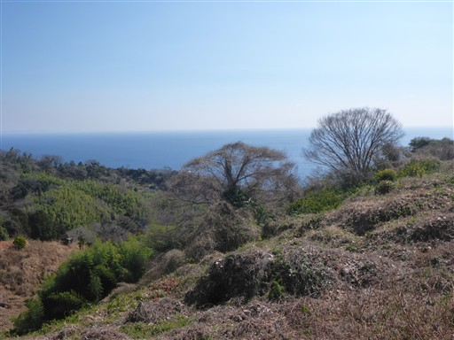
夏みかんが売られている。1個10円は良心的すぎるだろう。3つ購入する。
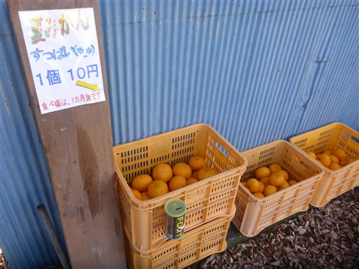
橋を渡る。
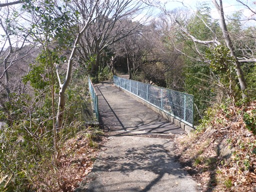
橋の下も車がほとんど通ることの無い車道だ。
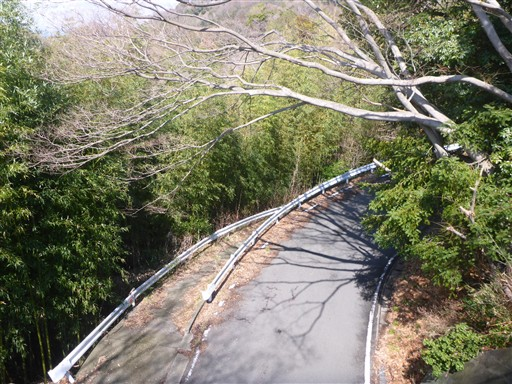
海が近づいてくる。
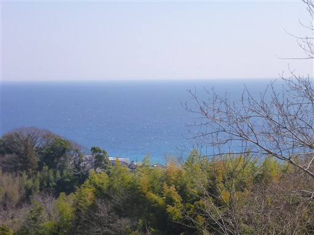
小田原の街と箱根の山々。

ずっと車道歩きだったので、下山と言ってよいのか分からないが、街に出てきた。
2両編成の御殿場線の電車が走っている。
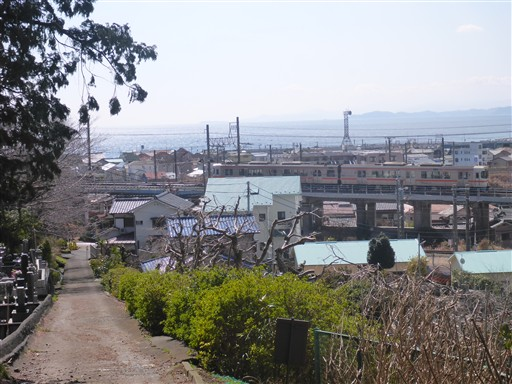
入り乱れる線路。さきほどの高架の御殿場線と、踏切、奥に東海道線の電車が見える。
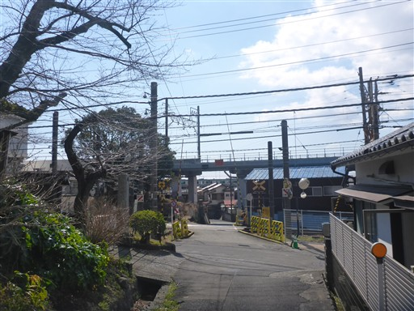
東海道線をトンネルで超える。
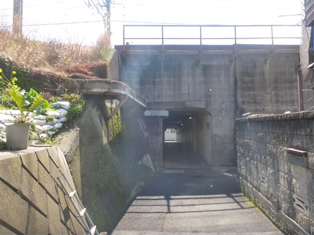
大通りに出てくる。せっかくなので海を見てから帰ることにする。
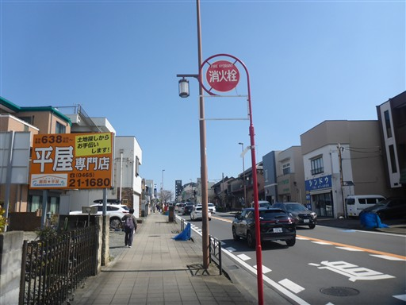
防波堤が続いているが、砂浜に降りられる場所を発見。
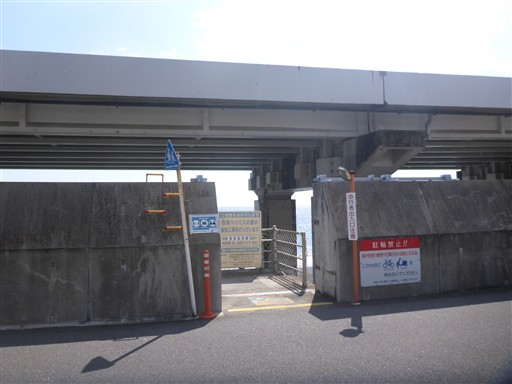
目の前に広がるのは相模湾。
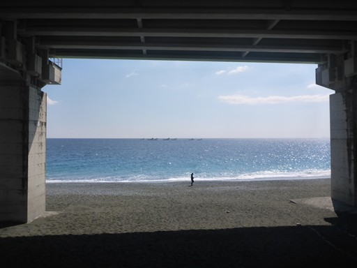
そして、その砂浜の上に作られているのが西湘バイパス。すごい所に道を作ったものだ。
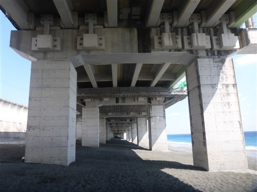
真っ青な海。少し波を眺めてから駅に向かう。
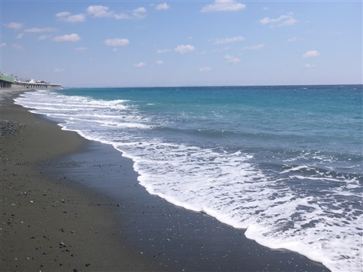
国府津駅に到着。標高20m。
曽我丘陵はほとんどが車道歩きなのは今一だったが、
周囲に広がる風景が美しく、春を感じられる一日だった。
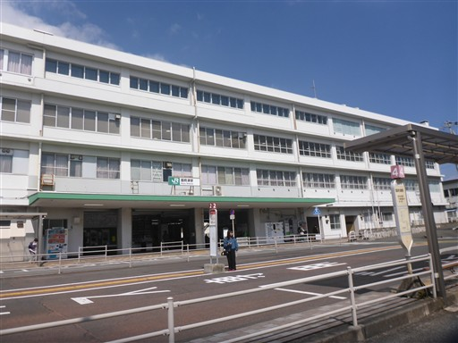